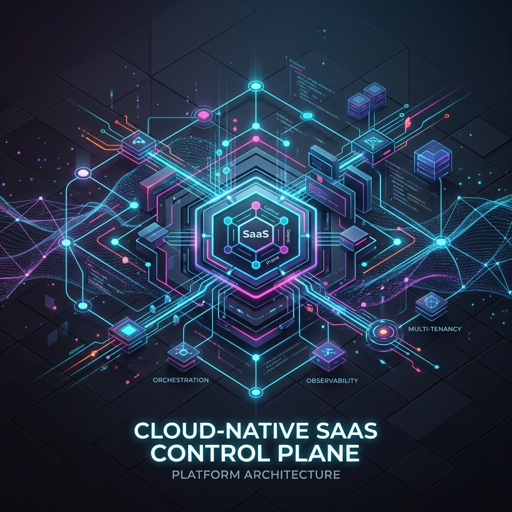
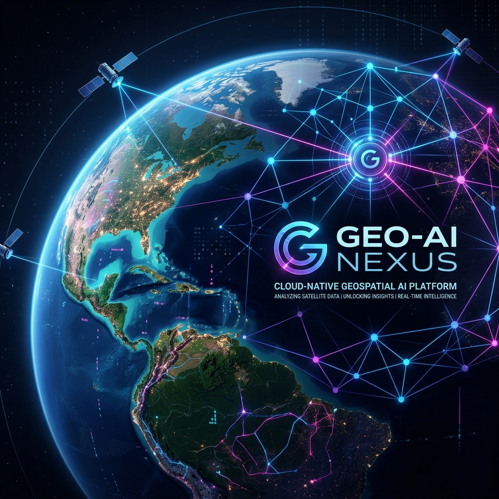

High-Scale Backends & Data
Migrated 5.08M+ rows (MySQL to PostgreSQL 18) in 2h 15m with zero data loss, slashing API response times to sub-second latency.
Software Developer with 2+ years of production experience building high-concurrency async backends (FastAPI, Django, PostgreSQL 18, Redis, Celery) and production deep learning microservices (RF-DETR with DINOv2, Detectron2, ResUNet, Geospatial AI). Shipped 8+ enterprise production applications, led zero-downtime 5.08M+ row migrations, and engineered standardized Deep Learning Bundles (DLBs) on NVIDIA Ada Lovelace GPUs.
High-Scale Backends & Data
Migrated 5.08M+ rows (MySQL to PostgreSQL 18) in 2h 15m with zero data loss, slashing API response times to sub-second latency.
Rapid Delivery & Frameworks
Shipped 8 end-to-end production systems independently, rewriting entire frameworks (Django to FastAPI async) in under 18 days.
Production Deep Learning & CV
Architected standardized DLBs across RF-DETR (DINOv2) and Detectron2 Mask R-CNN, delineating 2,589 satellite parcels in 15.5s.
Professional Profile & Role Framing
My core focus is designing and shipping high-performance Python software systems at production scale—spanning asynchronous backend architectures (FastAPI, Django, PostgreSQL 18, Redis, Celery) and edge/cloud deep learning perception pipelines.
With a proven track record of shipping 8+ live enterprise applications independently, I solve complex real-world engineering challenges: zero-downtime database migrations (5.08M+ rows in a 2h 15m window), async biometric microservices, and standardized Deep Learning Bundles (DLBs) across Vision Transformers (RF-DETR) and CNN architectures (Detectron2 Mask R-CNN, ResUNet-4B) on NVIDIA Ada Lovelace GPUs.
Target Designation
Core Engineering Stack
Experience
Software Developer (Deep Learning & Systems)
June 2026 – Present
[[12], [24], [48], [96], [192]]) to capture smallholder plots (< 1 ha).Dirt) and structural fissures (Damage).metadata.json), catalog schemas (data.json), and isolated execution engines (inference/main.py).update_job_status) compatible with distributed cloud worker pods.create_dlb.py) that bundle production weights while filtering out intermediate training checkpoints (.ckpt), caching layers, and database manifests.Python Full Stack Developer
May 2025 - June 2026
Python Developer Intern
Oct 2023 - Jan 2024
Software Engineer Intern
Apr 2023 - May 2023
Key Metrics Summary
37,830 images / 45,716 annotations (License Plates); 10,178 chips / 4.8M vectors (USA NAIP Agriculture); 146k instances (India Agriculture); 2,995 drone frames (Windmill Defects).
License Plate: 97.64% mAP@50, 72.13% strict mAP@50:95.
Windmill Defects: 87.30% mAP@50, 85.77% F1.
Continental Ag (USA): 68.84% Mask AP₅₀, 70.24% Box AP₅₀.
Maritime SAR Ships: 59.24% mAP@50, 75.0% Precision.
Delineated 2,589 deduplicated parcels in 15.5s (~20 FPS) on a full-scene GeoTIFF (Dharwad AOI 32) using an NVIDIA RTX 5000 Ada with automated GeoJSON polygon vectorization and dynamic acreage calculation.
Maintained a steady ~3.8GB VRAM footprint during large-scale instance segmentation training using bfloat16 AMP. Average production .dlb bundle sizes optimized between 83 MB and 156 MB.
Project Deep Dives
Overview: Engineered the core deep learning runtime integration for the XenTerra Pulse platform, replacing heterogeneous training and inference scripts with modular, container-ready bundles.
Architecture: Standalone packages containing model weights, minimal runtime definitions (metadata.json), catalog schemas (data.json), and isolated execution engines (inference/main.py) capable of executing on both CPU worker pods and GPU clusters.
Key Achievements:
Detect Objects), pixel classification (Classify Pixels), and instance segmentation models.update_job_status) from model inference loops.create_dlb.py) that bundle production weights while filtering out intermediate training checkpoints (.ckpt) and database manifests (maintaining 83MB–156MB sizes).Overview: Created an instance and semantic boundary segmentation framework to delineate agricultural field boundaries across the United States, Europe, and India from orbital and aerial sensors.
Multi-Continental Sensor Pipelines:
Technical Innovations & Performance:
[[12], [24], [48], [96], [192]]) to capture smallholder plots across Indian agrarian patterns.Overview: Upgraded legacy CNN computer vision pipelines (Faster R-CNN, YOLO) to Meta DINOv2-backed Detection Transformers (RF-DETR Medium, 33.4M params), reducing inference latency while boosting localization accuracy across three domains.
Three Target Domains:
Dirt) and fissures (Damage).Engineering Edge Cases Solved:
Overview: Standardized and packaged open-source research foundation models into production DLBs for planetary-scale infrastructure monitoring and renewable energy assets.
Microsoft GRW Windmill Detection: Isolated the FCN8 ResNet-50 inference architecture; inlined model code directly into inference/main.py; established radiometric normalization pipelines; diagnosed spatial resolution scale mismatches between high-resolution NAIP and PlanetScope sensors.
Pipeline & Roadmap Assets:
Enterprise SaaS & Distributed Platforms
Control Plane SaaS
Multi-tenant cloud control plane backend managing authentication, billing, workspace administration, and real-time clustering.
Geospatial AI Platform
Distributed inference engine for satellite/drone imagery analysis covering agriculture, environment, and infrastructure.
B2B SaaS (Warranty)
B2B SaaS warranty system built from scratch to staging independently, supporting full RBAC, certificate generation, and auto-verify endpoints.
AI Attendance (Migration)
Migrated entire service from Django+DRF to FastAPI async with aiomysql + SQLAlchemy connection pooling in 18 days with zero downtime.
WhatsApp SaaS
Multi-tenant WhatsApp Business SaaS with bulk messaging, scheduling, and real-time two-way chat using Meta's official Cloud API.
Telemetry Platform
Django/DRF middleware between Traccar GPS server and OpenSearch telemetry; triggers geofencing alerts via geopy.
Legal Tech
Multi-court scraping engine covering 6+ Indian High Courts using Selenium, Playwright, and BeautifulSoup4.
Hospitality + Hardware
PyQt6 desktop application for front desk operations with integrated RFID card writers via pyserial for NFC keycards.
GovTech Dashboard
Government-facing platform for MAA scheme; manages records across Anganwadi centres with WHO growth standard classification.
Core Infrastructure
Enterprise SaaS & Cloud Control Plane
A core backend platform developed at GJ Maps Solutions serving as the foundation for user management, authentication, and billing operations.


Geospatial AI
Cloud-Native Geospatial AI Platform
A specialized engine developed at GJ Maps Solutions focused on cloud operations, data processing, and machine learning inference for heavy geospatial data workloads.
Core Technical Skills Matrix
RF-DETR (Lightweight DETR + DINOv2 ViT Backbone), Detectron2, Mask R-CNN, Faster R-CNN, FCN8, ResUNet-4B, Hungarian Bipartite Loss, Soft Dice Loss, Transfer Learning, Anchor Optimization, Segment Anything (SAM), Grounding-DINO.
Rasterio, Shapely, GeoPandas, GDAL, Multi-spectral/SAR Ingestion (Sentinel-1 SAR, Sentinel-2 Optical, USDA NAIP 0.6m–1.0m, ISRO Resourcesat-2 LISS-4 5.0m), GeoTIFF processing, Orthorectification, Cross-Tile NMS, Sliding-Window Tiling, Hanning-window blend, NDVI computation, EPSG/WGS84 re-projections.
Python 3.10+, PyTorch, PyTorch Lightning, TorchVision, Albumentations, Supervision, OpenCV, NumPy, SciPy, FastAPI, Django, Flask, SQLAlchemy async, aiomysql.
AWS S3, AWS EFS, AWS EKS (Kubernetes), Docker containerization, Linux (WSL2 / Ubuntu), mixed-precision computing (bfloat16 / FP16 AMP), NVIDIA RTX 5000 Ada (Ada Lovelace), PostgreSQL 18, Snowflake / Fabric DB syncing, automated test suites (pytest).
FastAPI, Django REST Framework, Celery, Redis, SQLAlchemy 2.x async, aiomysql, PostgreSQL 18, MySQL, Qdrant Vector DB, OpenSearch, WebSockets, Daphne / ASGI, Docker Compose.
Playwright, Selenium, BeautifulSoup4, Scrapy, RFID smart cards (pyserial), Meta WhatsApp Cloud API, Traccar GPS, HMAC-SHA256 signed links, PyTest unit testing.
Education
IES IPS Academy, Indore, Madhya Pradesh
2021 - 2025 | GPA: 7.50 / 10
RPM Academy, Gorakhpur, Uttar Pradesh
2019 - 2021
Certifications
ITechCert / AICERT
Issued July 2024
IIT Delhi (FITT / MP-IITD)
Issued March 2024
Contact
If you need an engineer who can architect distributed backends (FastAPI, Django), optimize high-volume databases, and deploy production-grade deep learning and perception systems, reach out.